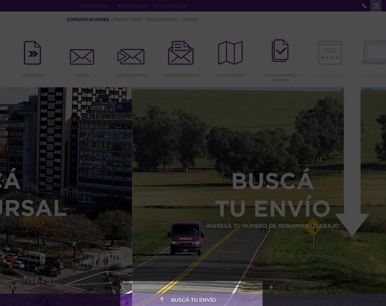

Seguimiento de trámite para DNI
Si ya iniciaste el trámite para renovar, reemplazar o actualizar tu DNI, podés hacer el seguimiento en línea, con el número de tu documento o el de la constancia que te entregaron en ese momento (boleta prenumerada de 26 dígitos).
100% digital
Gratuito
Consultá el estado de tu trámite en curso
Conocé el estado del trámite de tu dni sólamente ingresando tus datos en esta misma página.
Seguí la entrega tu trámite para DNI en los siguientes sitios:
En el sitio del Correo Argentino
- Ingresá al seguimiento de trámites del Sitio del Correo Argentino desde este link
- Ingresá el número de tu DNI
- El sistema te indicará donde se encuentra.
En el sitio de O.C.A.
- Ingresá al seguimiento de envíos del Sitio de OCA desde este link
- Ingresa tu Número de envío

- El sistema te indicará donde se encuentra.